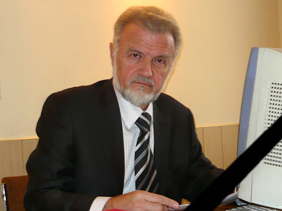

Описание внешнего вида и размеры «Памятника клавиатуре»
Памятник клаве в Екатиринбрге представляет собой бетонный монумент, в виде точной копии клавиатуры персонального компьютера в масштабе 30:1. Это самая большая «клава» не только в России, но и в мире! Она состоит из 104 клавиш, отлитых из «антивандального» материала — бетона. Каждая из них весит от 100 килограмм, а вес пробела достигает 500 килограмм. Расположение клавиш соответствует раскладке QWERTY. Поверхность бетонных клавиш плоская, но на ней имеются рельефные обозначения букв, а также функциональных символов, которые размещены в таком же порядке, как и на обычной клавиатуре персонального компьютера. Общая площадь этого уникального памятника — 16×4 метра. Размер каждой клавиши — 36×36 сантиметров.
История создания
Автор скульптуры, художник Анатолий Вяткин в интервью прессе рассказывал, что идея сделать «Памятник клавиатуре» пришла неожиданно. Он работал над одним из проектов для международной выставки. Много времени проводил за компьютером и понял, что клавиатура сегодня — такое же «общее место, как сковородка» — есть практически в каждом доме. Вскоре после этого при поддержке арт-сообщества и екатеринбуржских бизнесменов была начата работа над изготовлением деталей скульптуры. Она оказалась сложнее, чем это может выглядеть для человека, не занимавшегося ваянием. Бетон крайне тяжелый материал для скульптуры. Открытие «Памятника клавиатуре» состоялось 5 октября 2005 года. Клавиши автор создавал вручную, а установку проводили при помощи специальной техники. На ручной труд ушло больше месяца, а монтаж занял около недели.
Интересные факты
Одним из первых посетителей памятника стал автор языка Паскаль, швейцарский ученый Никлаус Вирт.
Дом купца Чувильдина, стоящий на склоне рядом с клавой, стали называть «системным блоком», а реку Исеть именуют как «I-сеть». Жители Екатеринбурга фантазируют о создании рядом с клавиатурой памятника модему, монитору и компьютерной мыши.
Родители утверждают, что благодаря этой скульптуре дети быстрее учат алфавит.
Городские легенды гласят, что если загадать желание и «напечатать» его на клавиатуре, перепрыгивая с буквы на букву, после чего «нажать» «Enter», то оно непременно сбудется. А в случае, если возникли трудности, нужно попрыгать на «CTRL, ALT, DEL», после чего жизнь «перезагрузится».